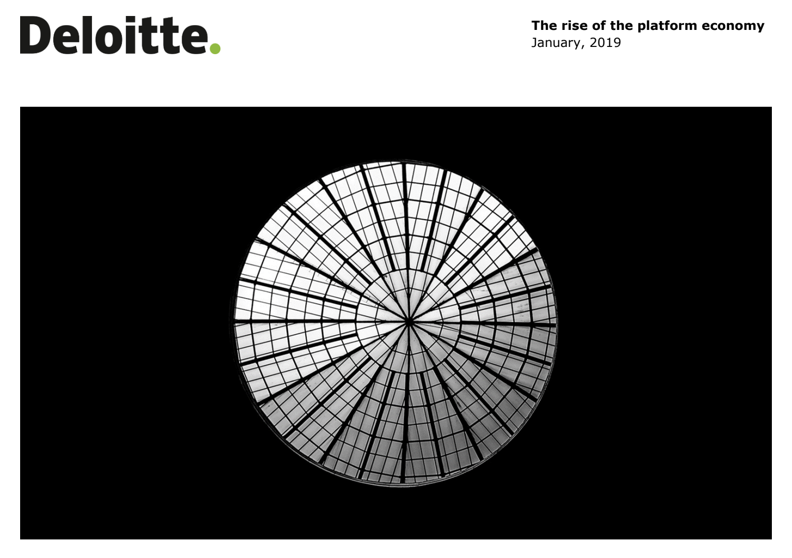

Uber, a global leader in ridesharing, has been a subject of intense analysis and debate regarding its valuation, innovative business model, and impact on the platform economy. This study provides an in-depth look into Uber's journey, exploring its valuation dynamics, market strategy, and economic footprint.
Uber's journey from a $17 billion USD valuation in 2014 to a $130 billion today (jan 2024) reflects its transformative impact on urban transportation and logistics. This section examines the evolution of Uber's valuation, considering its expansion from an urban car service to a global logistics and mobility powerhouse.
Uber's expansion beyond urban areas into global markets, including Asia, highlights its adaptability and strategic foresight. The company's growth in diverse markets and sectors underscores the scalability of its platform and its ability to attract new customer segments.
This section delves into the nuances of Uber's business model, from its initial low capital-investment approach to exploring new avenues like food delivery and autonomous vehicles. It addresses the implications of these strategies on competition, market share, and overall business sustainability.
Uber's journey has not been without challenges. This section discusses the regulatory battles, market competition, and the cost structure pressures that Uber has faced, especially in global markets against local competitors and changing legal landscapes.
Uber's economic impact extends beyond market valuation. This section explores how Uber's operations have influenced social dynamics, urban transportation, and labor markets, highlighting both the opportunities and responsibilities that come with being a market leader.
Looking forward, Uber's continuous adaptation to market demands, technological advancements, and regulatory environments is crucial. This section speculates on future trends, potential new markets, and the evolution of Uber's services and business model.
In conclusion, Uber's case study offers profound insights into the complexities of digital innovation, market valuation, and global expansion. The company's journey underscores the dynamic nature of the platform economy and the need for adaptive strategies in the face of evolving market conditions, regulatory landscapes, and technological advancements. Uber's story is a testament to the transformative power of digital platforms and their far-reaching economic and social implications.
With a presence in 65 countries, ride-sharing company Uber has conducted about 10 billion trips in its lifetime -- about 15 million per day. Paul Solman looks at how economists are using this treasure trove of data.
The platform economy poses significant questions, challenges and opportunities for society, the labour market and organisations.
After reading the Uber case study and source documents, participants are tasked with developing a business model for a company similar to Uber, but without relying on digital technologies. This exercise aims to explore the fundamentals of service delivery, customer engagement, and operational efficiency in a non-digital context.
Participants will gain insights into the challenges and opportunities of adapting a digital business model to a non-digital context, enhancing their understanding of fundamental business principles and creative problem-solving.